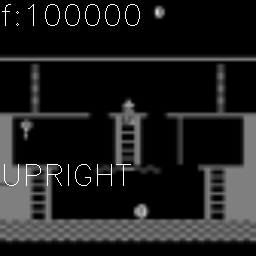
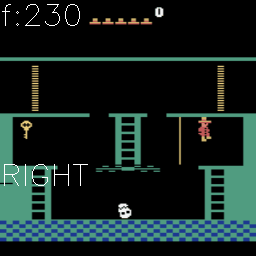
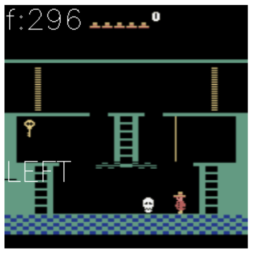
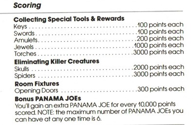
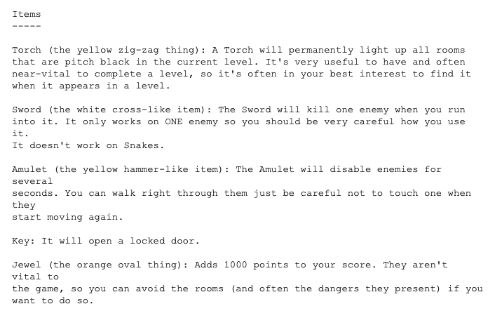
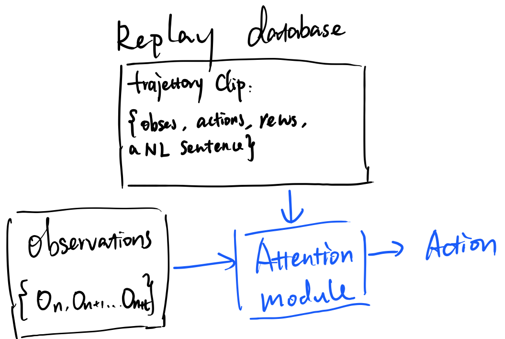
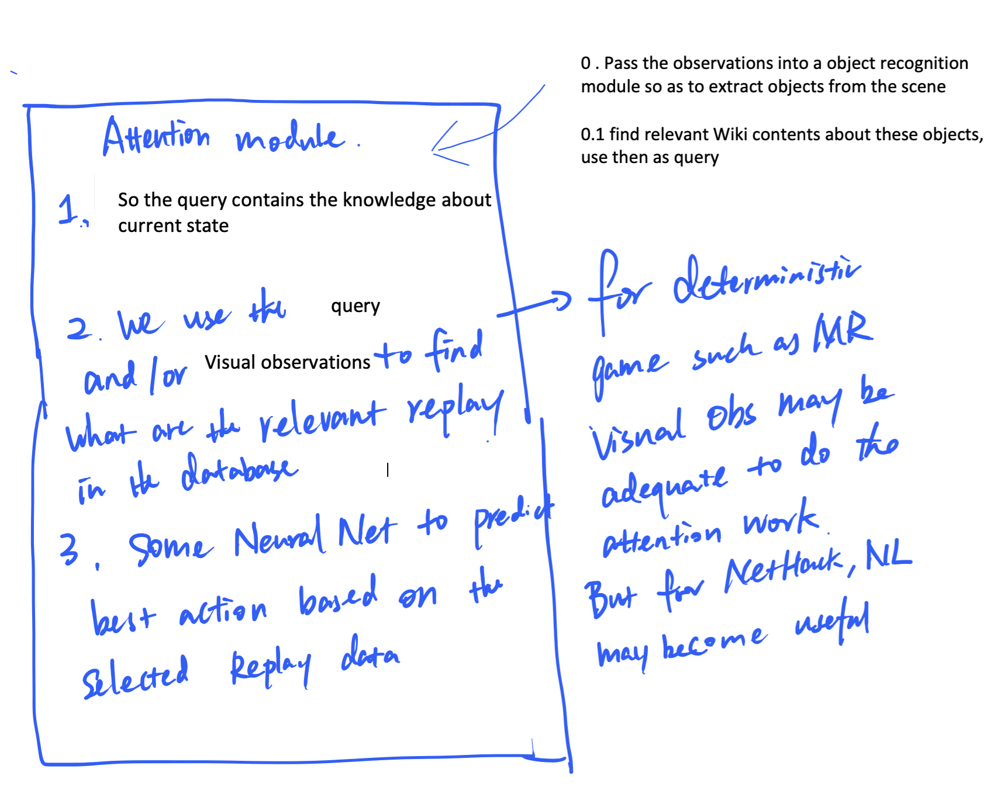
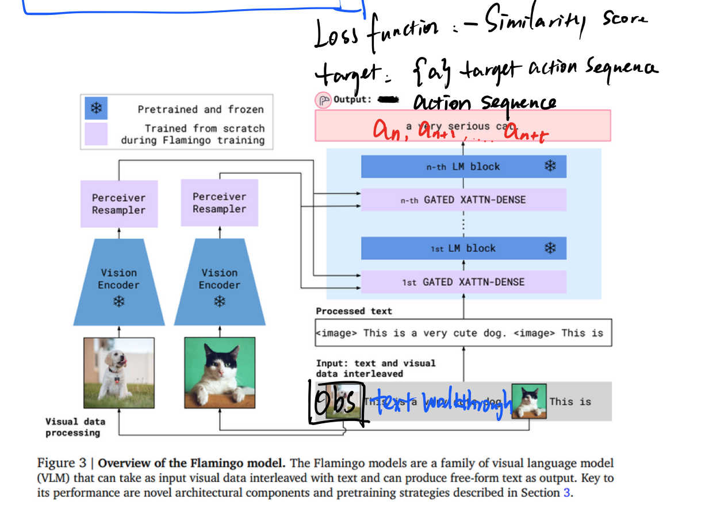

You need password to access to the content, go to Slack *#phdsukai to find more.
Part of this article is encrypted with password:
[TOC]
Table of Content#
- Info about two Montezuma’s dataset
- Info about Montezuma’s walkthrough
- Last week’s follow up: how to train Goyal’s RL agent
- Expand the idea of having a large general repository of language with game strategies, which the model would attend to during play.
- Flamingo multimodal model to do attention between textual strategy and observations.
- Useful open source code to implement IMPALA RL model
Info about two Montezuma’s dataset#
DQN replay dataset |
Human replay dataset |
|
|---|---|---|
| gif |  |
 |
| image | 84 x 84 grayscale | 160 x 210 x 3 rgb |
| actions | we cannot really control the character when he is in the air, and we can see that DQN agent is not aware of it. Also, the action sequence of the agent looks disordered (So, if we want to utilise the trajectory to train agent, it is better to clean the noises in the action sequence and extract the valid action) | the action is very consistent and steady compared to DQN agent |
| contrastive learning | Most of them can be seen as bad experiences which teach agent what shouldn’t do. | Most of them are good experiences |
Info about Montezuma’s walkthrough#
-
the following webpages contain Montezuma’s Level 1 Walkthrough (Atari 2600 version)
-
they use different tone and style to write Level 1 walkthrough
-
we can find the manual here
-
we can find Montezuma’s solution map at https://atariage.com/2600/archives/strategy_MontezumasRevenge_Level1.html

- So according to the solution map, we can see that we only have one solution path to win the game / gain highest rewards
Rethinking annotating the trajectory on different level of abstraction (high level strategies, low level instructions)#
- low-level instructions: specific instructions that is valid only to current situation
- e.g., “jump over the skull while going to the left” instruction is only valid when the agent is at the state below:
-

- high-level strategies: some general useful information that can apply to whole game
- e.g.,

the scoring information may motivate agent to collect keys, swords, amulets etc. and in fact, the reason of “jump over the skull while going to the left” is exactly to grab the key on the left and then open the door. - there are also item information

- e.g.,
- Annotating trajectories with low level instruction is straightforward, we just match the instruction with the corresponding trajectory clip. But in terms of high level information, I think there are two ways to annotate
- Way 1: for a high level strategy, we provide with multiple trajectories that correspond to the strategy
- e.g, “You have to jump over the rolling skulls” is a general strategy, and we associate it with multiple trajectory clips about the character jumping over the rolling skulls.
- Way 2: we extend the duration of our trajectory clip so that the general strategy can describe this long trajectory clip.
- e.g, in fact, the mission of the character in the first room is to “collect the key on the left and open the door on the left”, this corresponds to the general strategy which is to “collect keys and open locked doors to get rewards”.
- this will lead to the research about what is the suitable length of an annotated trajectory clip to train RL agent (in Goyal’s work, they used equally-spaced clips that are three-seconds long)
- Way 1: for a high level strategy, we provide with multiple trajectories that correspond to the strategy
By annotating the trajectory using natural language, we are able to conduct the research about the “effectiveness, data efficiency, and robustness” of using natural language walkthrough at different level of abstraction to train RL agent
- effectiveness: is the natural language annotation (both low level and high level) really help the agent to win the sparse-reward Montezuma’s Revenge game
- data efficiency: how many frames required for RL agent to reach target score using low-level NL instructions compared with using high level NL strategy.
- robustness: is the agent trained using trajectories annotated with high level strategy able to perform better (i.e., obtain higher rewards) when playing new game levels. (Since we only have walkthrough for Level 1, we can test robustness by letting agent play Level 2 and Level 3)
Last week’s follow up: how to train Goyal’s RL agent#
we can find the details in Section 3.1 and Section 4 in the paper
- The concern is about how can we pair up the language instruction and the trajectory during training.
- if we cut the past trajectory into equally-spaced clips, we cannot guarantee the one language instruction nicely covers one clip
- the solution from Goyal’s paper is to keep all the past action sequence and gradually accumulate it
- a_t denote the action sequence starting from timestep 0 until t, l denote the language instruction for the whole task. Then they use Reward Network to measure the Relativeness score of F(a_t, l)
- Therefore, the intermediate language reward is Rew_inter = F(a_t,l) - F(a_{t-1}, l)
- Limitation: this only considers the action sequence, neglecting the observations data.
- Limitation 2: we need to ensure one trajectory is short and also the instruction is short. (that’s why the author did not test the whole Montezuma game but rather test the agent with simple tasks)
The limitation of Goyal’s work is quite severe….
Concrete the idea of having a large general repository of language with game strategies, which the model would attend to during play.#
schematic diagram


Back to Nir’s question: Why we want language if we can use visual observations to do attention
- our final goal: we want the AI to learn compositionality of natural language and then apply this intelligence when facing unseen environment
- e.g, if the training trajectory only contains the scenes where “hero kill skulls using swords” and “hero jump over spiders”, then when we provide the agent a new strategy “kill spiders using swords”, then we expect that the agent that know how to analyse natural language can easily carry out this strategy even if they never encounter this event before.
- btw here is a very good blog talking about Montezuma’s Revenge and existing solutions https://awjuliani.medium.com/on-solving-montezumas-revenge-2146d83f0bc3
Flamingo multimodal model to do attention between textual strategy and observations.#
Definition of offline RL:
-
Offline RL is a paradigm that learns exclusively from static datasets of previously collected trajectories, making it feasible to extract policies from large and diverse training datasets.
-
If we want to use annotated trajectory as input to train offline RL agent, (training offline RL is like supervised learning) we can try the Flamingo multimodal model to bind natural language texts with image observations
-

Advantages of Flamingo model
- we use the pretrained large scale model and thus we expect that we can train the model using less training data.
Disadvantage
- It is hard to train a offline RL agent if we lack of training data.
Useful open source code to implement IMPALA RL model#
Needs to be familiar with pytorch jit script to implement vtrace. https://www.youtube.com/watch?v=2awmrMRf0dA
TODO#
- complete IMPALA codes and test
- know Pytorch JIT script
- search for annotation format / tool, and start annotating using existing walkthrough online
- concrete instructions
- general info/strategy
- check this blog https://www.neuralnet.ai/a-brief-overview-of-rank-based-prioritized-experience-replay/